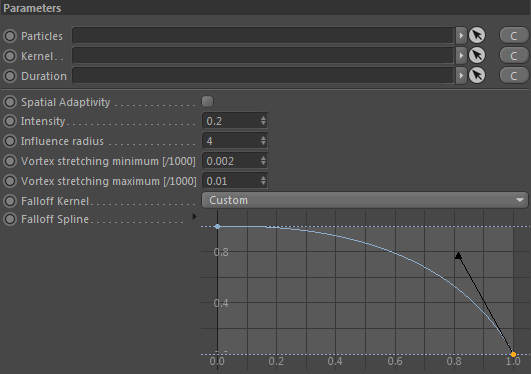
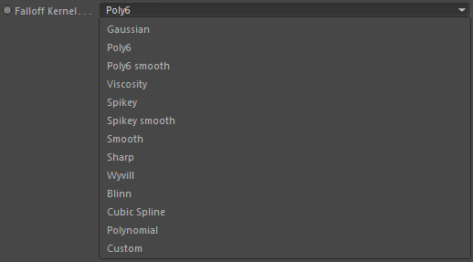

Parameters
Parameters

Particles
Takes a particle group that should contain vorticity particles (emitted into it for example with a Particle Grid/Mesh Emitter).
Kernel
Defines the falloff used in the turbulence calculation. See Falloff Kernel.
The resulting turbulent force is based on a weighted average of neighboring particles and their vorticity. Different kernels (falloffs) result in different
turbulent behavior. This is a matter of trial & error but is a good way to sensitively adjust the current turbulence.
If no Kernel is specified the setting "Falloff Kernel" is used instead.
Duration

Takes a Duration node in order to define the force emission duration. See Duration.
Intensity
The overall (unit-free) intensity of the resulting force.
Spatial Adaptivity

This option spatially adapts the vorticity strength based on flow helicity
and allows much higher values to be used.
It will intensify turbulences only where rolling motions indeed exist and not in places with vorticity alone.
It therefore generates much more stable and realistic turbulences.
Influence Radius
Defines the maximum distance (given in voxels/grid cells) around each particle to search for neighboring particles and vorticities.
A possibly given Falloff Kernel uses this distance as its range to calculate the influence the found neighbors have.
Vortex stretching minimum [/1000]
Defines the minimum length of vortex stretching allowed. Higher values yield stronger turbulences/folding (see below).
A vortex in a turbulent flow is not perfectly round. Instead it stretches along a certain direction and at some point starts to 'fold'.
This results in smaller vortices being formed out of it. The faster/stronger it folds, the more turbulent the result will be.
So it is a fundamental concept concerning vorticity.
Note: Most of the time you want to adjust the 'Vortex stretching maximum' value instead of the minimum.
Vortex stretch maximum [/1000]
Defines the maximum length of vortex stretching allowed. Higher values yield stronger turbulences/folding (see below).
A vortex in a turbulent flow is not perfectly round. Instead it stretches along a certain direction and at some point starts to 'fold'.
This results in smaller vortices being formed out of it. The faster/stronger it folds, the more turbulent the result will be.
So it is a fundamental concept concerning vorticity.
Falloff Kernel

Defines the falloff kernel used.
The resulting turbulent force is based on a weighted average of neighboring particles and their vorticity. Different kernels (falloffs) result in different
turbulent behavior. This is a matter of trial & error but is a good way to sensitively adjust the current turbulence.